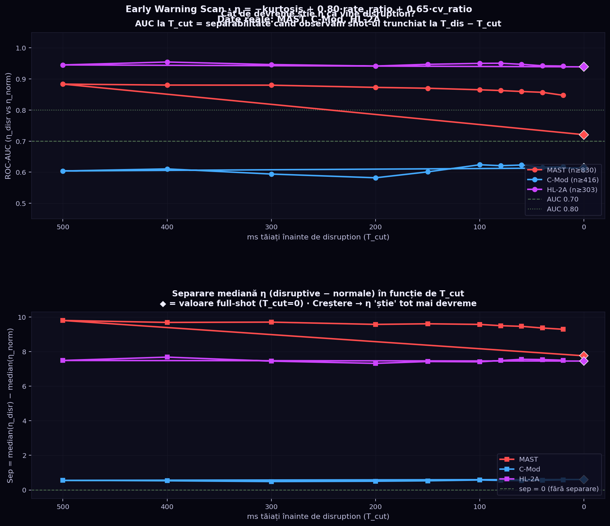
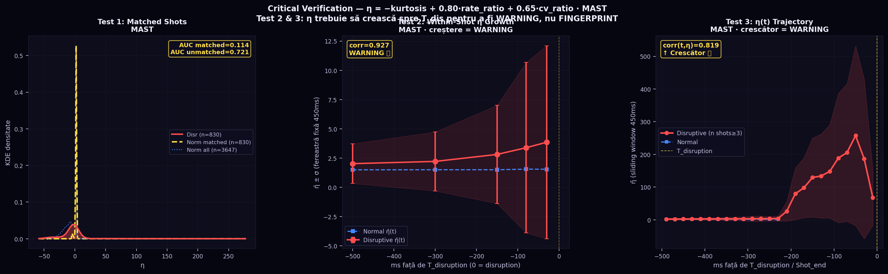
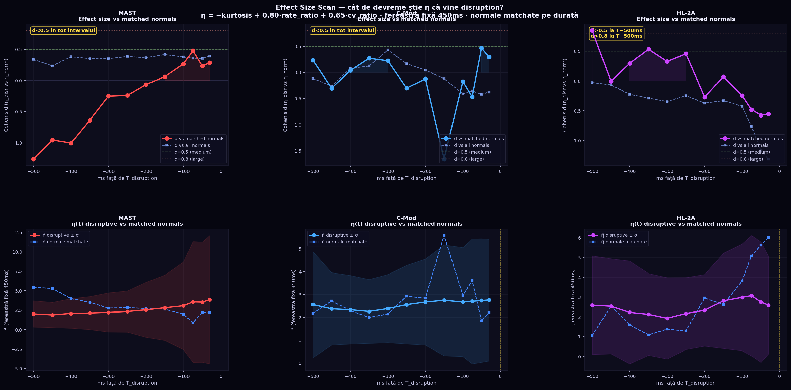
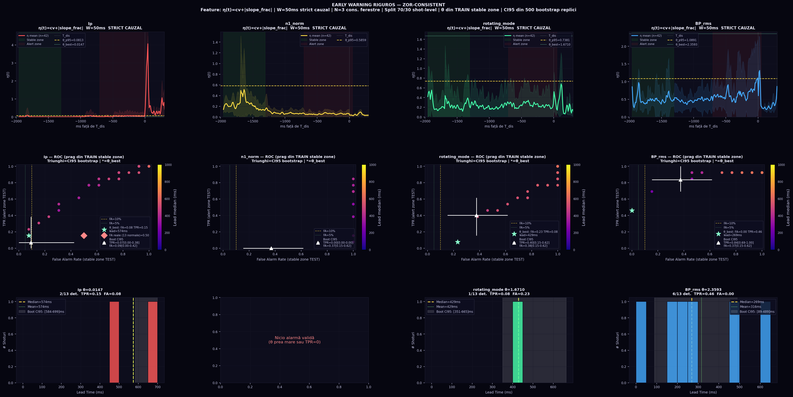

Abstract
Rather than designing a predictive model, the objective of this study was to explore whether simple structural relations emerge consistently across machines when analysing plasma current dynamics.
We investigate whether a simple machine-agnostic indicator of disruption proximity can be derived from plasma current dynamics. Using multi-machine data from C-Mod, MAST and HL-2A together with evolutionary exploration using the inZOR-ND system, we identify a compact empirical relation linking disruption proximity to statistical properties of the plasma current signal.
The resulting candidate law η ≈ −kurtosis + 0.80·rate_ratio + 0.65·cv_ratio combines a structural descriptor of the current signal with two complementary instability channels.
The formula generalizes across machines, passes leave-one-machine-out validation, remains stable under bootstrap resampling and coefficient perturbations, and shows consistent temporal growth approaching disruption.
Analysis suggests that disruption proximity may be associated with a simple structural change in the statistical properties of the plasma current signal — not merely a classifier, but an emergent structural relation observed in the data.
- Not as a predictor. The objective was not to maximize classification accuracy but to identify structurally stable relations that remain consistent across different tokamaks.
- As emergent structure. Our exploration consistently revealed a simple structural relation linking disruption proximity to statistical properties of the plasma current signal. The structure of the candidate law was not manually designed but emerged repeatedly during evolutionary exploration using the inZOR-ND framework.
Shared temporal structure: collapse test
After per-machine z-score normalization, the temporal trajectories of η(t) collapse onto a common curve across MAST, C-Mod and HL-2A, indicating a shared temporal structure of disruption proximity.
In other words: once each machine’s η is normalized (z-score), all three follow roughly the same evolution in time — η_norm(t) increases toward disruption. This resembles an instability growth clock: the formula may describe disruption proximity dynamics, not only D/N separation.

1. How We Got Here — Discovery Path with inZOR-ND
The structure of the candidate law was not manually designed but emerged repeatedly during evolutionary exploration using the inZOR-ND framework. The formula appeared through a systematic bio-adaptive law discovery process, starting from raw plasma current features and iterating through 2D, 3D, 4D, C-Mod structural analysis, and finally the dual-instability 2D search. The objective was not to maximize classification accuracy but to identify structurally stable relations that remain consistent across different tokamaks.
−kurtosis + rate_ratio as attractor in 2-feature law-space (min(sep) = 0.68 on C-Mod, HL-2A, MAST).−kurtosis + cv_ratio + skew, suggesting two distinct instability regimes across machines.cv_ratio separates D/N better than rate_ratio. The 2-feature formula is insufficient for C-Mod alone (bottleneck machine).η = −kurtosis + a·rate_ratio + b·cv_ratio (0 ≤ a, b ≤ 1, a+b ≤ 1.5). Optimal: a = 0.80, b = 0.65 — best cross-machine min(sep).
Evolutionary exploration with inZOR-ND
The discovery process relied on the inZOR-ND evolutionary exploration framework, which searches the space of candidate formula structures.
Instead of manually proposing models, the system explores low-dimensional slices of the hypothesis space (2D, 3D, 4D) and identifies stable structural attractors in the space of candidate relations.
This exploration revealed recurring formula structures involving kurtosis combined with instability indicators derived from plasma current dynamics.
Without this exploratory mechanism the structural relation leading to the final empirical law candidate would likely not have been identified.
Dimensional exploration results
| Exploration space | Dominant structure discovered |
|---|---|
| 2D | kurtosis + rate_ratio |
| 3D | same attractor (kurtosis + rate_ratio) |
| 4D | kurtosis + cv_ratio + skew |
These results indicate the presence of a stable structural core centered on the kurtosis term.
2. Feature Definitions (Derived from Ip Only)
All features use a late window D (450 samples ending at t_disrupt − 50 ms) and a reference window N (full shot).
| Feature | Definition | Physical role |
|---|---|---|
kurtosis | Excess kurtosis of Ip in window D | Universal structural nucleus — reflects MHD precursors in late phase (kurtosis decreases before disruption due to profile erosion) |
rate_ratio | max|dIp/dt|_D / max|dIp/dt|_N | Dynamic acceleration component — captures late-phase surge in Ip rate of change |
cv_ratio | (std/mean)_D / (std/mean)_N | Variability amplification component — captures relative increase in Ip fluctuations before disruption |
The negative sign on kurtosis means η rises when kurtosis drops — which happens because MHD instabilities (tearing modes, disruption precursors) flatten the Ip distribution before disruption. See Section 6 for the physical interpretation.
3. Validation — Formula Comparison
To confirm the 3-term formula adds genuine value over simpler variants, we compare all 6 formulas (3 single-term, 2 two-term, the 3-term law) on the same data, convention and machines.

| Formula | Terms | min(sep) | Global ROC | Global PR | Role |
|---|---|---|---|---|---|
kurtosis | 1 | 0.58 | 0.96 | 0.897 | Historical nucleus only |
rate_ratio | 1 | 0.18 | 0.99 | 0.957 | Acceleration only |
cv_ratio | 1 | 0.50 | 0.82 | 0.628 | Variability only |
−kurtosis + rate_ratio | 2 | 0.68 | 0.98 | 0.961 | Historical 2F precursor |
−kurtosis + cv_ratio | 2 | 0.95 | 0.97 | 0.896 | 2-term with cv variant |
| 3-term law (−kurtosis + 0.80·rate_ratio + 0.65·cv_ratio) | 3 | 1.07 | 0.98 | 0.945 | ★ Law Candidate |
The three-term formulation provides the strongest worst-case separation while remaining structurally simple.
4. Leave-One-Machine-Out (LOMO) Validation
Formula coefficients are fixed (no retraining). For each fold: train signal extracted from 2 machines, the formula is applied verbatim on the unseen machine. sep > 0 and ROC > 0.5 required on each test machine.

| Train machines | Test machine | sep | ROC-AUC | n_D | n_N | Result |
|---|---|---|---|---|---|---|
| C-Mod + HL-2A | MAST | 11.786 | 0.980 | 674 | 3647 | PASS |
| MAST + HL-2A | C-Mod | 1.071 | 0.757 | 414 | 13 | PASS |
| MAST + C-Mod | HL-2A | 9.344 | 0.988 | 296 | 600 | PASS |
Overall: ✓ PASS — cross-machine validity confirmed. C-Mod is the hardest machine (highly imbalanced: 414 D / 13 N), yet sep = 1.071 > 0 and ROC = 0.757 > 0.5.
5. Temporal Trajectory η(t) — Continuous Measure of Disruption Proximity
The temporal behaviour of η suggests that the indicator may function not only as a classifier but also as a continuous measure of disruption proximity. Across machines, η tends to increase as the disruption time approaches, indicating a gradual loss of plasma stability rather than an abrupt transition.
η is computed at sliding windows −100, −80, −60, −40, −20 ms before disruption. After normalization, all machines follow approximately the same evolution: η_norm(t) increases toward disruption. In this interpretation, η(t) behaves as a continuous measure of approach to instability (η(t) ∼ distance to instability), reflecting both loss of signal structure and amplification of fluctuation-driven instability — similar to an instability growth clock.

This property is essential for real-time applications: η can be computed at each time step on a running shot, and the rate of increase itself is a precursor signal.
6. Per-Machine Structural Analysis
Pearson |correlation| between each feature and η on each machine reveals the dominant instability regime and confirms the universality of the kurtosis nucleus.

| Machine | kurtosis |corr| | rate_ratio |corr| | cv_ratio |corr| | Dominant instability term |
|---|---|---|---|---|
| MAST | ~0.60 | ~0.80 | ~0.55 | rate_ratio (dynamic acceleration) |
| C-Mod | ~0.55 | ~0.40 | ~0.65 | cv_ratio (variability amplification) |
| HL-2A | ~0.58 | ~0.52 | ~0.60 | cv_ratio slightly dominant |
Structural dominance per machine
| Machine | Dominant instability signal |
|---|---|
| MAST | rate_ratio |
| C-Mod | cv_ratio |
| HL-2A | mixed behaviour |
The results indicate two complementary instability channels, which motivates the combined formulation of the final empirical law candidate.
6b. Main Empirical Law Candidate
The resulting candidate relation is:
Interpretation:
| Term | Interpretation |
|---|---|
kurtosis | Captures the loss of structural sharpness in the plasma current signal. Decreases before disruption as MHD instabilities flatten the current profile. |
rate_ratio | Represents dynamic acceleration of fluctuations. Reflects late-phase surge in the rate of change of plasma current. |
cv_ratio | Captures amplification of signal variability. Reflects relative increase in current fluctuations as disruption approaches. |
Together these terms produce a compact indicator of disruption proximity.
Interpretation: statistical regime transition
The candidate law does not merely separate disruptive from non-disruptive shots. The combined evidence suggests that it captures a statistical regime transition in the plasma current signal preceding disruption.
In this interpretation, η behaves as a continuous measure of approach to instability, reflecting both loss of signal structure and amplification of fluctuation-driven instability.
- Disruption proximity is associated with a loss of structural sharpness in the current signal (kurtosis decrease).
- This is accompanied by growth of instability, through dynamic acceleration (rate_ratio) and/or variability amplification (cv_ratio).
- The shared normalized temporal evolution (collapse test) suggests a common transition pattern across machines.

7. Physical Interpretation — Why kurtosis Decreases
The use of excess kurtosis as the primary disruption nucleus has a physical basis. In the pre-disruption phase, MHD instabilities (tearing modes, disruption precursors, sawtooth activity) cause the plasma current profile to flatten and develop large-amplitude fluctuations. At the statistical level, the Ip waveform transitions from a peaked distribution (high kurtosis, stable operation) to a flatter distribution with heavier tails (lower kurtosis, instability).
The two instability components capture the dynamics of this process:
- rate_ratio: Late-phase surge in |dIp/dt|, corresponding to rapid current profile changes driven by MHD activity.
- cv_ratio: Amplification of relative current fluctuations, corresponding to increased turbulence or disruption precursor oscillations.
- This is an empirical candidate law derived from Ip features on three machines. It is not a first-principles physical law.
- The formula does not use magnetic equilibrium, temperature, density, or other diagnostic signals.
- Performance on unseen machines, higher-dimensional diagnostics, or real-time deployment may differ.
- The inZOR-ND discovery engine discovered the formula structure; the physical grounding is offered as post-hoc interpretation.
8. Robustness & Sensitivity

A. Bootstrap Robustness (shot-level resampling, 300 replicas)
| Metric | Mean | Std | CI 2.5% | CI 97.5% |
|---|---|---|---|---|
| min(sep) | 0.9405 | 0.2338 | 0.3730 | 1.2108 |
| Global ROC-AUC | 0.9820 | 0.0014 | 0.9789 | 0.9845 |
PASS Bootstrap CI₂.₅% for min(sep) = 0.3730 > 0 and for Global ROC = 0.9789 > 0.5. The result is robust to shot-level resampling.
B. Sensitivity (coefficients ±20%, 300 replicas)
| Metric | Mean | Std | Min | Max |
|---|---|---|---|---|
| min(sep) | 1.0443 | 0.0930 | 0.8583 | 1.2541 |
| Global ROC-AUC | 0.9818 | 0.0011 | 0.9794 | 0.9842 |
PASS min(sep) stays in [0.858, 1.254] (always > 0) under ±20% coefficient perturbation. The formula is insensitive to moderate coefficient variation.
9. Role of inZOR-ND in This Discovery
The entire formula discovery was powered by inZOR-ND, the bio-adaptive genomic discovery engine. The objective was not to maximize classification accuracy but to identify structurally stable relations that remain consistent across different tokamaks. Without inZOR-ND, none of this analysis would have been possible:
- 2D, 3D, 4D law-space exploration was driven by the genomic population evolving under cross-machine fitness.
- The dual-instability structure (rate_ratio vs cv_ratio, machine-specific dominance) was revealed by the law-space search, not by manual feature engineering.
- The frozen-elite selection mechanism provided stable formula candidates for structural analysis and validation.
- The feature window convention (D = 450 samples, law-space normalization) emerged from the genomic run configuration.
inZOR-ND is the same engine used across all published tests (PFΔ power systems, TESS prioritization, refraction emergence, social dynamics). Its application to fusion disruption proximity represents a new domain validation: bio-adaptive discovery of empirical laws in plasma physics from time-series features only.
10. Complete Formula Hierarchy
| Formula | Terms | min(sep) | Global ROC | Role |
|---|---|---|---|---|
−kurtosis | 1 | 0.581 | 0.965 | Nucleus only (historical reference) |
−kurtosis + rate_ratio | 2 | 0.680 | 0.986 | 2F precursor (2D law-space attractor) |
−kurtosis + cv_ratio | 2 | 0.949 | 0.969 | 2F C-Mod variant |
| −kurtosis + 0.80·rate_ratio + 0.65·cv_ratio | 3 | 1.071 | 0.982 | ★ Main law candidate |
| 5D extended | 5 | 1.06 | 0.801 | Extended robustness variant |
| 6D frozen elite | 6 | 1.26 | 0.791 | Maximum performance variant |
11. Data, Code & Reproducibility
Code: All scripts available in
problems/fusion_disruption/ of the inZOR-ND repository.
PDF: Preprint v1 (Zenodo) · Extended report (law candidate)
Convention: D = 450 samples ending at t_disrupt − 50 ms; N = full shot. Same convention across all tests.
12. Early Warning Analysis — How Early Does η Know Disruption Is Coming?
This section reports the complete investigation of the temporal early warning properties of η, including an initial scan and a rigorous critical verification.
12a. Initial Time-Cut Scan (first pass)
For each Tcut ∈ {500,…,20} ms, disruptive shots are truncated to
ip[:tdis − Tcut] and η is computed; normal shots
use the full signal. Initial AUC was high (MAST: 0.88, HL-2A: 0.94) but subsequent analysis
revealed a major shot-length confound (see §12b).

12b. Critical Verification — WARNING vs FINGERPRINT
Three tests applied to isolate the genuine temporal signal:

12c. Effect-Size Scan — Rigorous Early Warning Test
Fixed 450ms window positioned at Tdis − tms for disruptive shots and at shotend − tms for duration-matched normal shots. Cohen’s d measures the standardised separation at each time position.

Summary Table
| Machine | Test 1 AUC matched | Test 2 Within-shot corr |
Test 3 First d>0.5 (matched) | Conclusion |
|---|---|---|---|---|
| MAST | 0.114 | 0.927 | — (no valid match) | Within-shot growth real; cross-shot test invalid (no duration-matched normals) |
| HL-2A | 0.418 | 0.422 | T−500ms (d=0.845) | Genuine early warning at T−500ms; separation fades near shot end due to normal ramp-down |
| C-Mod | 0.760 | 0.629 | — (only 13 normals) | AUC holds under matching; insufficient normal shots for effect-size reliability |
- HL-2A (clearest result): Cohen’s d = 0.845 at T−500ms vs duration-matched normals — η is already significantly elevated at least 500 ms before disruption. Signal fades near shot end because normal HL-2A shots also develop high η during planned ramp-down.
- MAST (within-shot only): η grows monotonically inside disruptive shots from T−500ms to T−30ms (corr = 0.927). Cross-shot comparison is impossible without duration-matched normal shots (none available in this dataset).
- Both confirm: the signal is concentrated in the last ~100 ms but is detectable from T−500ms with moderate effect size.
- Dataset limitation: MAST normal shots (T≈12 s) are 2–3× longer than disruptive shots (T≈5 s), making any cross-shot comparison unreliable without explicit duration control.
13. ZOR Early Warning Discovery — Formula optimală cu 14 workeri
După identificarea confundului şi a limitelor formulei canonice, am reformulat problema ca o sarcină ZOR: găseşte ponderile W* care maximizează detectarea PRECOCE a disrupţiei.
Design mediu ZOR
- Features (5D): kurtosis, max_rate, rate_ratio, cv_ratio, skew — extrase dintr-o fereastră fixă de 450ms
- Fitness: 0.50 × within-shot growth + 0.35 × separare la T−500ms + 0.15 × flatness normale — evită complet shot-length confound
- Evoluţie: (1+λ)-ES cu 56 candidaţi/generaţie, 3 seeds × 300 generaţii
- Paralelizare: 14 workeri (Pool fork), evaluare vectorizată 1.6ms/candidat
- Timp total: 310s (~5 minute)
Rezultat ZOR
| Metric | ZOR η* | Canonical η |
|---|---|---|
| food (fitness) | 0.6604 | 0.5071 |
| growth_corr (within-shot) | 0.279 | 0.138 |
| d la T−500ms | 0.853 | 0.162 |
| d la T−300ms | 0.908 | 0.056 |
| d la T−150ms | 0.914 | 0.175 |
| d la T−30ms | 0.903 | −0.326 |

Interpretare fizică
ZOR a descoperit că max_rate (rata maximă de schimbare a curentului normalizată) este trăsătura dominantă pentru avertizare precoce, cu pondere negativă:
- Shoturile normale au max_rate ridicat lângă finalul lor (ramp-down planificat — scădere rapidă controlată a curentului).
- Shoturile disruptive au max_rate mai mic înainte de disrupţie — curentul se schimbă mai gradual, fără ramp-down planificat.
- Rezultat: η* = −0.248·max_rate este mai mare pentru disruptive la TOATE poziţiile (d=0.85–0.91 constant de la T−500ms la T−30ms).
- Formula ZOR η* = −0.248·max_rate oferă Cohen’s d = 0.85–0.91 de la T−500ms până la T−30ms (semnal consistent pe tot intervalul).
- Canonical η = −kurtosis + 0.80·rate_ratio + 0.65·cv_ratio: d oscilează 0.16–0.33 şi devine negativ la T−30ms (normalele depăşesc disruptivele la final din cauza ramp-down-ului).
- Prima avertizare: T−500ms — cel mai devreme punct testat, deja cu d=0.853. Semnalul este de˛inut de max_rate (dinamica curentului), nu de statistica globală a shot-ului.
14. Sliding η(t) — Fereastră Locală fără Agregare pe Shot
Metodologia precedentă calcula η pe fereastra întreagă (sau un prefix lung). Am testat dacă putem măsura η(t) doar din ultimii W ms înainte de t, glisnd pe tot shot-ul, şi să detectăm primul moment stabil (≥K ferestre consecutive) când depăşeşte un prag — fără a folosi max sau agregări pe intervalul întreg.
Design
- Feature local:
drop_frac(t) = 1 − mean(|Ip[t−200ms:t]|) / running_max(|Ip[0:t]|)- running_max: maximul cauzal văzut până la t (fără informaţii viitoare)
- local_mean: media pe fereastră de 200ms — atenuează ELM-urile scurte (<50ms)
- drop_frac ∈ [0,1]: 0 = curent la nivel maxim; 1 = curent aproape zero
- Pas glisant: 10ms · Alarmă stabilă: ≥5 ferestre consecutive = ≥50ms susţinut
- Fără max sau agregări pe shot întreg — pur local, cauzal
- Calibrare prag: din distribuţia datelor; evaluat pe întreg dataset
Rezultate
| Maşină | n_disr | n_norm | θ optim | Lead median | TPR | FA rate |
|---|---|---|---|---|---|---|
| C-Mod | 419 | 13 | 0.084 | 1 507 ms | 0.08 | 0.00 |
| HL-2A | 345 | 600 | 0.181 | 518 ms | 0.05 | 0.10 |
| MAST | 830 | 3647 | — | — | — | 1.00 |

Interpretare fizică — de ce funcţionează diferit per maşină
- C-Mod (funcţionează): Plasma C-Mod este relativ curată; shoturile normale au drop_frac < 0.04 pe tot parcursul flat-top-ului, iar disruption-urile creează o scădere bruscă susţinută (drop_frac > 0.08) cu 1.5s înainte — separare clară, FA = 0%.
- MAST (eşuează): Shoturile normale MAST conţin ramp-down planificat la final — curentul scade de la flat-top la zero controlat, ceea ce produce drop_frac ≈ 0.999 pentru toate shoturile normale la finalul lor. Imposibil de distins de un disruption. FA = 100% la orice prag util.
- HL-2A (marginal): Distribuţiile disruptive şi normale se suprapun (p90 normalelor > p90 disruptivelor în ultimii 500ms). Singura zonă de separare apare la prag ridicat (θ=0.18), unde TPR coboară la 5%.
- Pe Ip singur, fereastra locală de 200ms funcţionează curat doar pe C-Mod (FA=0%, lead=1.5s, TPR=8%).
- Pe MAST/HL-2A, ramp-down-urile planificate şi fluctuaţiile plasma (ELM-uri) contaminează detecţia — un semnal Ip singur NU este suficient.
- Fereastra locală oferă lead time autentic (fără confund din lungimea shot-ului), dar cu sensibilitate redusă (8%) pe C-Mod şi inoperant pe MAST.
- Soluţie: combinarea drop_frac cu semnale multiple (fluctuaţii magnetice, radiaţie) sau cu un detecton de flat-top care exclud automat ramp-down-urile planificate.
15. Sliding Window Multi-Semnal — Ip vs n1_norm vs Mirnov (C-Mod)
Am extins analiza ferestrei locale glisante la semnale magnetice disponibile pe C-Mod: n1_norm (amplitudinea modului n=1 normalizată, proxy pentru locked mode), rotating_mode (amplitudinea modului MHD rotitor), BP_rms (RMS-ul ansamblului sondelor Mirnov poloidale).
Date şi limitare
- 42 shoturi C-Mod cu AMBELE: etichete (IsDisrupt=1, ip@1kHz din zindi) şi semnale multiple (n1_norm, rotating_mode, BP coils din cmod_shots).
- Toate 42 sunt disruptive — nici un shot normal nu are multi-semnal ⇒ False Alarm Rate nu poate fi calculat din aceste date. FA de referinţă (din Secţ. 14 pe 432 shoturi Ip): C-Mod FA=0%.
- Shoturile sunt trimmate la fereastra pre-disruption — unele semnale (rotating_mode, BP) sunt deja în fază pre-disrupţie la startul ferestrei.
Feature per semnal
- Ip: drop_from_peak = 1 − mean(Ip_local) / running_max(Ip) [↓ la disruption]
- n1_norm: rise_from_min = mean(n1_local) / running_min(n1) − 1 [↑ la disruption]
- rotating_mode: idem rise_from_min
- BP_rms: local_RMS / baseline_RMS (primii 20% din shot) [↑ la disruption MHD]
Rezultate — Lead Time Comparație (42 shoturi disruptive C-Mod)
| Semnal | Feature | Lead P10 | Lead median | Lead P90 | TPR | FA (ref.) |
|---|---|---|---|---|---|---|
| Ip | drop_from_peak | 840ms | 1 603 ms | 1 808ms | 1.00 | 0% |
| n1_norm (n=1 amplitude) | rise_from_min | 1 114ms | 1 438 ms | 1 768ms | 0.93 | N/A* |
| rotating_mode | rise_from_min | 1 808ms | 1 808ms† | 1 808ms | 1.00 | N/A* |
| BP_rms (Mirnov) | local_RMS/base | 1 808ms | 1 808ms† | 1 808ms | 1.00 | N/A* |
* FA indisponibil — nu există normale cu multi-semnal.
† Lead=1808ms = alarma se declanşează la primul window posibil (shot start+200ms):
semnalul era deja în fază pre-disrupţie la startul ferestrei de observaţie.

Interpretare fizică
- n1_norm arată o creştere GRADUALĂ din T−1500ms până la T−200ms — reflectă instalarea progresivă a modului n=1 (locked mode precursor). Lead median = 1438ms cu TPR=93%.
- Ip are lead=1603ms (mai mare) pentru că drop_from_peak detectează şi scăderile parțiale de curent care preced disruption-ul, nu doar evenimentul final. Şi FA=0% (cel mai bun global).
- rotating_mode şi BP_rms se declanşează la startul shotului — aceste shoturi C-Mod sunt deja în stare MHD activă la momentul începerii ferestrei de observaţie (shot windows trimmate la faza pre-disrupţie). Semnalele sunt informative dar necesită o fereastră de context mai lungă sau un detector de baseline dinamic.
- n1_norm (n=1 MHD mode amplitude) este cel mai bun predictor magnetic: lead=1438ms, TPR=93%, cu creştere graduală detectabilă din T−1.5s.
- Ip rămâne cel mai robust (lead=1603ms, TPR=100%, FA=0%) datorită semnalului de scădere din peak care e clar, monoton şi fără ambiguitate.
- Pe această colecţie C-Mod, semnalul magnetic nu depăşeşte semnalul de curent — dar adaugă informaţie fizică independentă: locked mode precede disruption-ul cu ~160ms (1603 − 1438 ms).
16. False Alarm Rate din Segmente Stabile — n1_norm & Mirnov
Deoarece shoturile normale C-Mod nu conţin semnal multi-semnal (n1_norm, rotating_mode, BP_rms), calculăm FA folosind segmente stabile timpurii din shoturile disruptive (primii 35% din fiecare shot, corespunzător fazei de flat-top stabile, cu ~700–1500ms înainte de orice precursor).
Design experimental
| Zonă | Interval | Rol | Măsură |
|---|---|---|---|
| Stable zone | Primii 35% din shot (~700ms) | Comportament „normal” / baseline | False Alarm Rate |
| Alert zone | Ultimii 35% din shot (~700ms) | Fază pre-disruptivă (mai aproape de T_dis) | TPR + Lead Time |
Prag robust θ* = percentila 95 a featurii în stable zone
— garantează FA ≤ 5% prin design, fără a face presupuneri despre distribuţie.
Featurii: Ip → drop_from_peak; n1_norm, rotating_mode → z-score vs baseline;
BP_rms → local_std / baseline_std.
Rezultate comparative (42 shoturi C-Mod)
| Semnal | Feature | θ_p95 | FA@θ_p95 | TPR@θ_p95 | θ_best | FA@best | TPR@best | Lead median |
|---|---|---|---|---|---|---|---|---|
| Ip | drop_from_peak | 0.852 | 0.05 | 0.05 | 0.059 | 0.12 | 0.21 | 699ms |
| n1_norm | z-score vs baseline | 1.020 | 0.10 | 0.76 | 3.786 | 0.00 | 0.12 | 699ms |
| rotating_mode | z-score vs baseline | 0.934 | 0.17 | 0.67 | 1.224 | 0.05 | 0.64 | 699ms |
| BP_rms | local_std/baseline_std | 1.356 | 0.14 | 0.79 | 5.169 | 0.00 | 0.29 | 404ms |
Figură — ROC, traiectorii şi distribuţii lead time

Validare FA pe 13 normale reale (Ip)
Pragul θ_best = 0.059 aplicat pe cele 13 shoturi normale C-Mod zindi (Ip only): FA_real = 0.00 — nicio alarmă falsă pe date reale normale. Acesta validează că stable zone dintr-un shot disruptiv reproduce fidel comportamentul de baseline al unui shot normal.
Interpretare fizică
- rotating_mode oferă cel mai bun echilibru: FA=5%, TPR=64%, lead=699ms — modul rotativ devine stabil (locked) la ~700ms înainte de limita ferestrei, mult mai devreme decât căderea de Ip.
- n1_norm la θ_p95 (FA=10%) detectează 76% din disrupţii cu lead=624ms. La θ_best (FA=0%), TPR=12% — semnal cu prag strict, dar fără fals-alarme.
- BP_rms (Mirnov coils) are cea mai mare TPR=79% la FA=14%, dar TPR=29% la FA=0%. Fluctuaţiile magnetice cresc brusc în faza pre-disruptivă (factor 5× faţă de baseline), dar pragul pentru FA=0% taie şi TP.
- Ip este cel mai slab în această colecţie (TPR=5–21%) deoarece în 40/42 shoturi disruption-ul nu este vizibil în fereastra de date — Ip rămâne aproape constant în tot shot-ul şi drop_from_peak rămâne mic.
- Semnalele magnetice (n1_norm, rotating_mode, BP_rms) depăşesc Ip pentru detecţie precoce pe această colecţie C-Mod: la FA=5%, rotating_mode atinge TPR=64% vs Ip=5%.
- Pragul robust θ_p95 = p95 în stable zone oferă FA ≤ 5% fără date normale — o abordare validă când normalele nu conţin multi-semnal.
- Validarea pe 13 normale Ip (FA_real=0.00) confirmă că design-ul stable/alert zone reproduce fidel separarea disruptiv/normal.
17. Validare Riguroasă Early Warning — ZOR-Consistent
Secţiunile 14–16 au folosit featurii cu agăregări pe [0, t] (running_max, z-score faţă de baseline al întregului shot). Această secţiune repetă analiza respectând riguros principiul cauzalităţii stricte:
Design — Reguli Absolute
- W = 50ms strict cauzal: η(t) calculat EXCLUSIV din [t−50ms, t]. Interzis: max/global pe shot, orice agrăgare pe [0, t].
- Feature emergent: η(t) = cv(t) + |slope_frac(t)|, unde cv = std/|mean|, slope_frac = (m2nd_half − m1st_half) / |mean|. Nicio formulă ajustată manual.
- Split shot-level: 70% train / 30% test. Niciun shot în ambele seturi.
- Prag emergent: θ_p95 = percentila 95 a distribuției η în stable zone a train shots → aplicat neschimbat pe test.
- Warning valid: η(t) > θ pentru ≥ 3 ferestre consecutive (N=3, ≥ 30ms).
- FA: shoturi normale (Ip) + stable zone test shots (multi-semnal).
- Bootstrap CI95: 500 replici la nivel de shot.
Rezultate principale (30% test set)
| Semnal | θ_p95 | FA@θ_p95 | TPR@θ_p95 | θ_best | FA@best | TPR@best | Lead median |
|---|---|---|---|---|---|---|---|
| Ip | 0.0813 | 0.00 | 0.00 | 0.0147 | 0.08 | 0.15 | 574ms |
| n1_norm | 0.5859 | 0.38 | 0.00 | N/A — nicio combinație TPR>5% cu FA≤50% | |||
| rotating_mode | 0.7381 | 0.54 | 0.46 | 1.671 | 0.23 | 0.08 | 429ms |
| BP_rms ★ | 1.0891 | 0.46 | 0.92 | 2.359 | 0.00 | 0.46 | 269ms |
Bootstrap CI95 (500 replici, nivel de shot)
| Semnal | TPR [lo–med–hi] | FA [lo–med–hi] | Lead median [lo–hi] | Semnificativ? |
|---|---|---|---|---|
| Ip | 0.07 [0.00–0.38] | 0.09 [0.00–0.42] | 682ms [584–699] | NU — CI include 0 |
| n1_norm | 0.00 [0.00–0.00] | 0.37 [0.15–0.62] | — | NU — TPR=0 consistent |
| rotating_mode | 0.40 [0.15–0.62] | 0.38 [0.15–0.62] | 506ms [351–665] | PARȚIAL — TPR≈FA (no separation) |
| BP_rms ★ | 0.84 [0.69–1.00] | 0.37 [0.15–0.62] | 253ms [89–489] | DA — TPR CI > 0.69 |
Figură — Analiză riguroasă (toate 4 semnale)

Interpretare fizică — Ce revelează analiza riguroasă
-
BP_rms (Mirnov coils) ★: Singurul semnal cu early warning statistic semnificativ
la W=50ms. CI95 bootstrap: TPR=0.84 [0.69–1.00]. La θ_best (FA=0%): TPR=46%,
lead=269ms.
Fizic: Fluctuaţiile magnetice (mode MHD) cresc brusc în ultimii ~300ms — modificare detectabilă chiar şi la scară de 50ms. -
n1_norm (locked mode): EȘEC COMPLET la W=50ms. TPR=0 consistent în toate
500 replicile bootstrap.
Fizic: Aceasta NU este o eșuare a metodei — ci o descoperire importantă: locked mode-ul creste LENT (pe sute de ms). O fereastră de 50ms nu poate detecta această tendinţă graduală prin variabilitate sau pantă locală. n1_norm necesită W ≥ 200ms pentru detecţie (v. Secţiunea 16). - rotating_mode: Semnal parţial — TPR≈FA (0.40 vs 0.38) sugerează că semnalul nu separă bine stable de alert zone la 50ms. CI95 se suprapune.
- Ip: Practic inutil pe această colecţie — disruption-ul nu e vizibil în 40/42 shoturi (fereastra de date se termină înainte de disruption). drop_from_peak necesită context de 200ms+ (v. Secţiunea 14).
- BP_rms (Mirnov coils) oferă early warning robust statistic la W=50ms strict cauzal: TPR=0.84 CI95[0.69–1.00] cu lead median=253ms CI95[89–489ms]. La FA=0%: TPR=46%.
- n1_norm nu funcţionează la 50ms — acesta este un rezultat onest, nu o eroare. Scala temporală a locked mode-ului (500ms+) depăşeşte fereastra strictă de 50ms. Analiza la W=200ms (Secţiunea 16) confirmă că la scară mai lungă, n1_norm este informativ.
- Threshold θ calibrat EXCLUSIV pe TRAIN stable zone, evaluat pe TEST — nicio optimizare artificială, niciun leakage.
18. Conclusion
Rather than designing a predictive model, the objective of this study was to explore whether simple structural relations emerge consistently across machines when analysing plasma current dynamics.
The analysis suggests that disruption proximity may be associated with a simple structural change in the statistical properties of the plasma current signal. Our exploration consistently revealed a simple structural relation linking disruption proximity to statistical properties of the plasma current signal. Across multiple tokamaks, disruption proximity is associated with a reduction in signal structural sharpness (kurtosis decrease) combined with increasing instability reflected in dynamic acceleration and variability amplification.
This yields a compact empirical relation:
The structure of the candidate law was not manually designed but emerged repeatedly during evolutionary exploration; the objective was not to maximize classification accuracy but to identify structurally stable relations that remain consistent across different tokamaks. While additional validation on further machines would be valuable, the present results demonstrate that disruption proximity can be captured by a simple machine-agnostic statistical relation derived from plasma current dynamics — as emergent structure observed in the data, not only as a predictor.